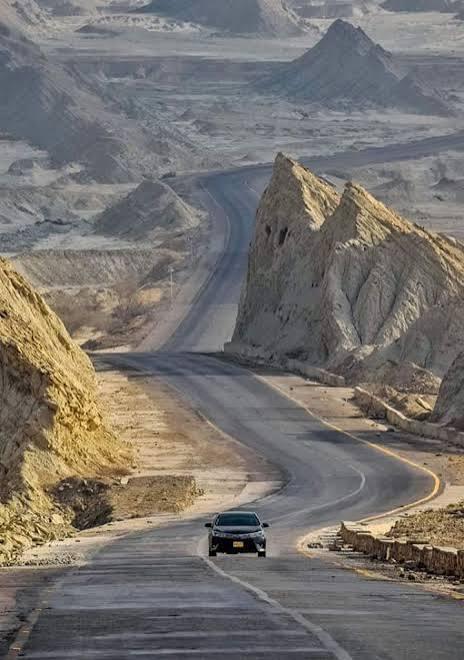
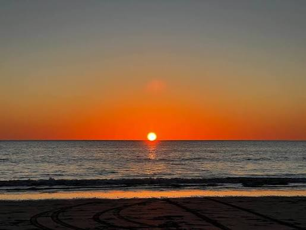
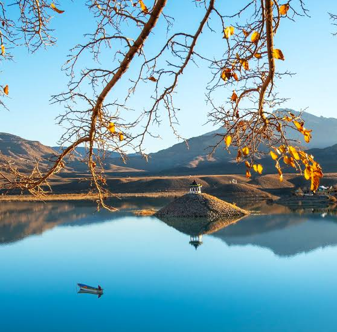

Ormara Tehsil & Makran Coast
Golden Sands,dramatic rock formations,and serene blue waters along the Arabian Sea.



Quetta & Surrounding Valleys
High-altitude lakes,rugged peaks,and lush fruit orchards.

